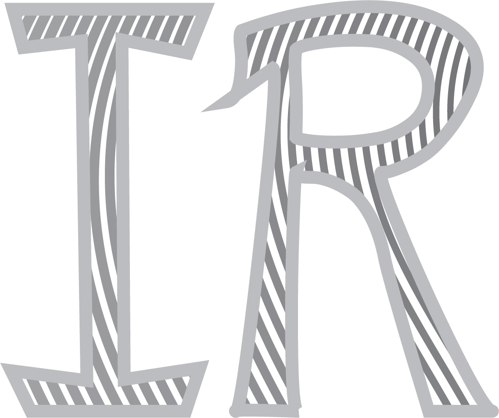
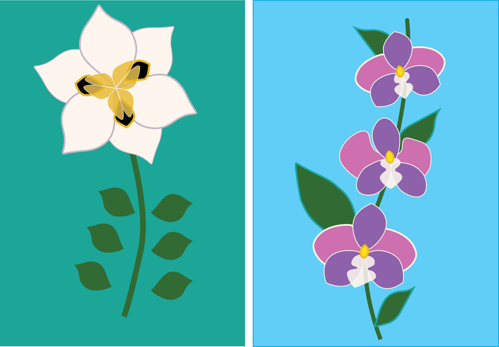
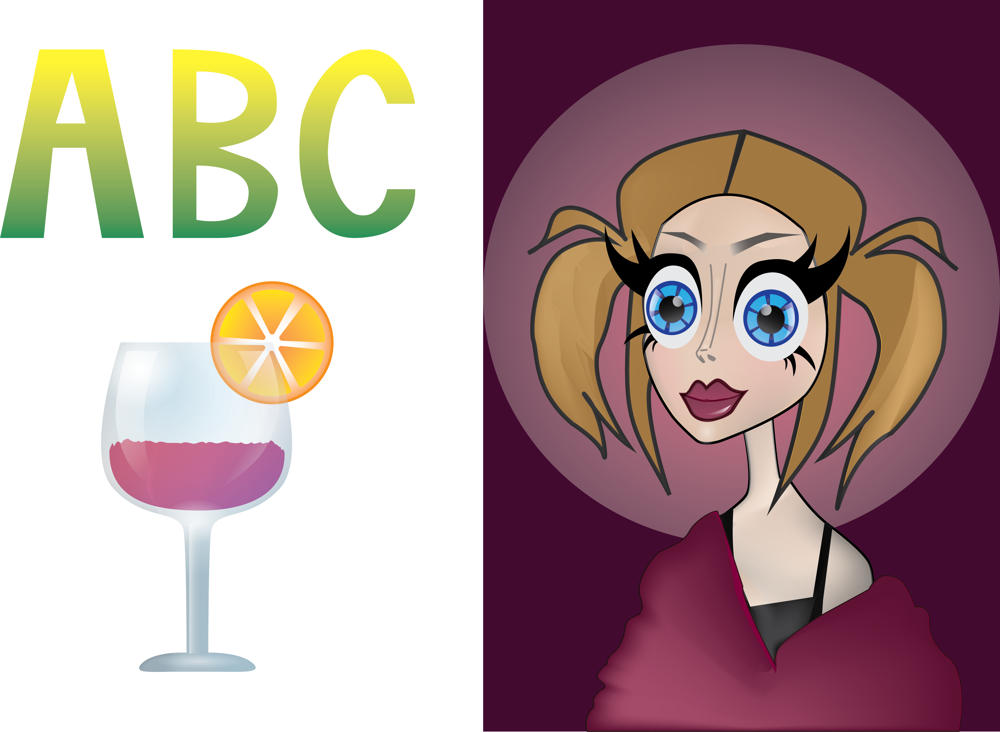
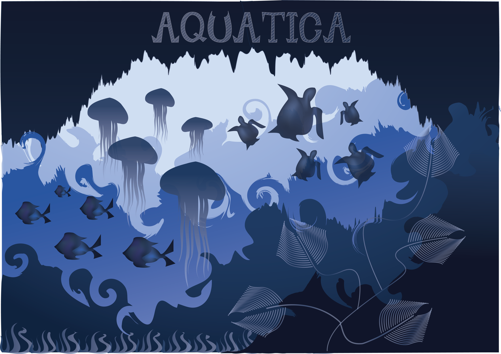
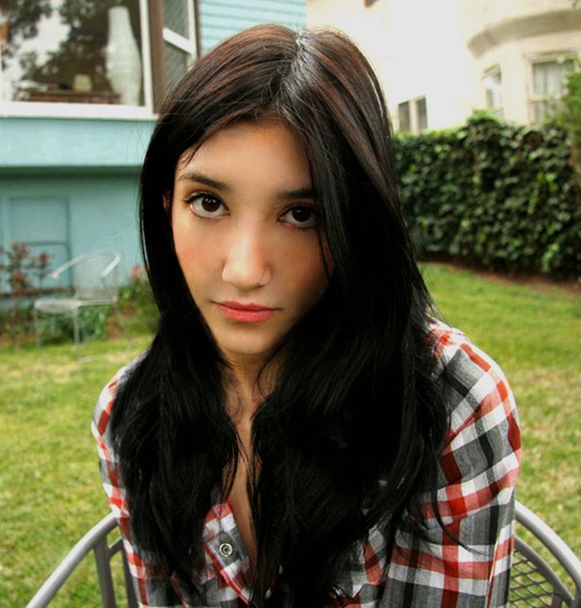
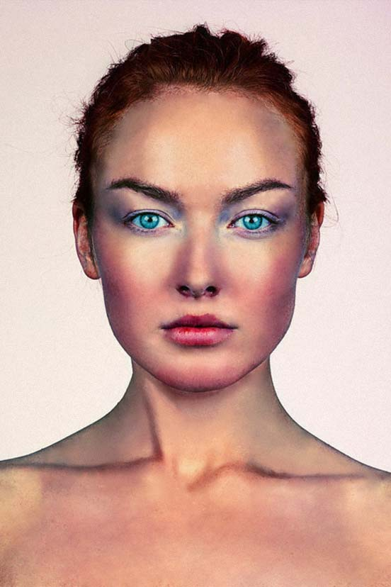
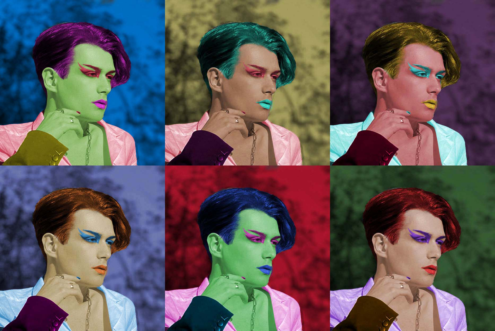
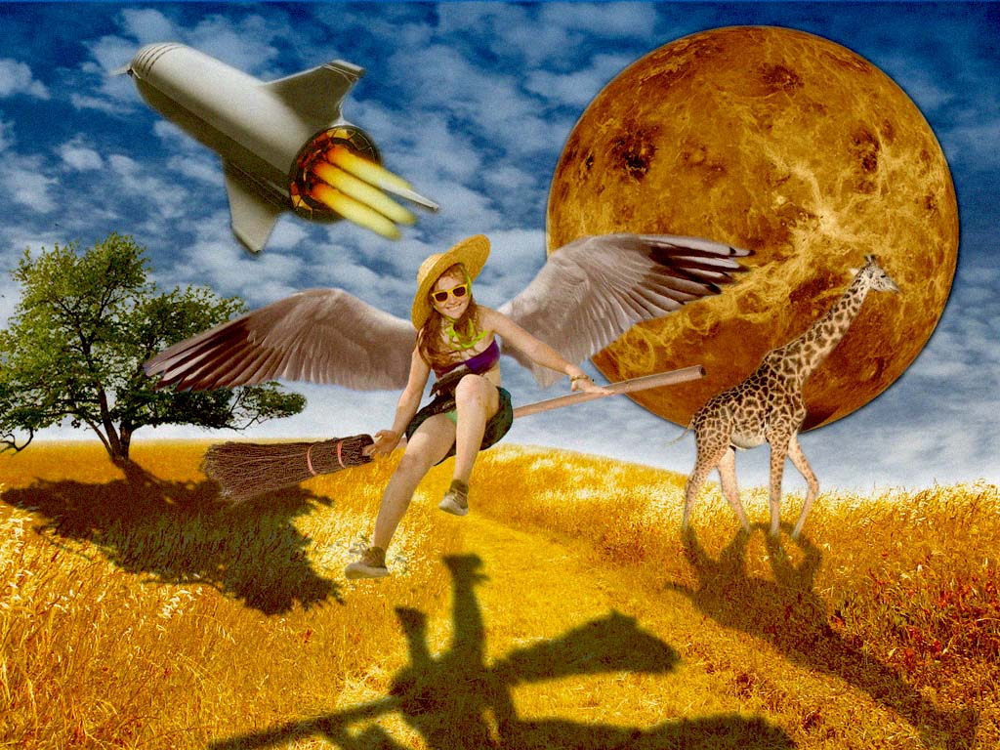
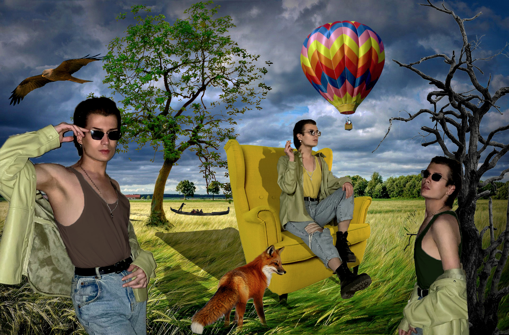

U ovoj vježbi smo naučili raditi kinemagrafe, poznatije kao gifovi.

Vježba 1 i 2
U prvoj smo vježbi pravili vlastiti font u programu po izboru, nakon čega smo isti iskoristili u programima za obrađivanje vektorske grafike, kao što je na primjer Adobe Illustrator.

Vježba 3
U ovoj vježbi smo pomoću Beizerovih krivulja učili traceati već postojeće objekte na slikama, kako bih od njih napravili objekte kojima možemo manipulirati.

Vježba 4
U ovoj vježbi smo savladali gradiente i transparenciju.

Projektni 1
U ovom projektnom zadatku smo trebali primjeniti svo do tad steknuto znanje na polju vektorske grafike, te napraviti sliku s podvodnim motivom.

Vježba 5
U ovoj vježbi smo učili retuširati osobe, te uklanjati neželjene objekte s fotografije.


Vježba 6
U ovoj vježbi smo se bavili koloriranjem crno-bijelih fotografija.

Vježba 7
Ovdje smo se bavili fotomontažom, točnije rezanjem objekata iz fotografije, manipuliranjem istih objekata, te njihovim komponiranjem na finalnoj fotografiji.

Projektni 2
U ovom projektnom zadatku smo trebali primjeniti svo do tad steknuto znanje na području piksel grafike, koje obuhvaća retuširanje, koloriranje, te fotomontažu.

Vježba 8
U ovoj vježbi smo naučili raditi kinemagrafe, poznatije kao gifovi.
Vježba 9
U ovoj vježbi smo naučili uređivati videe u programima namijenjenima za to, što obuhvaća stvaranje isječaka, njihovo spajanje s drugim isječcima, kao i dodavanje efekata i tranzicija.